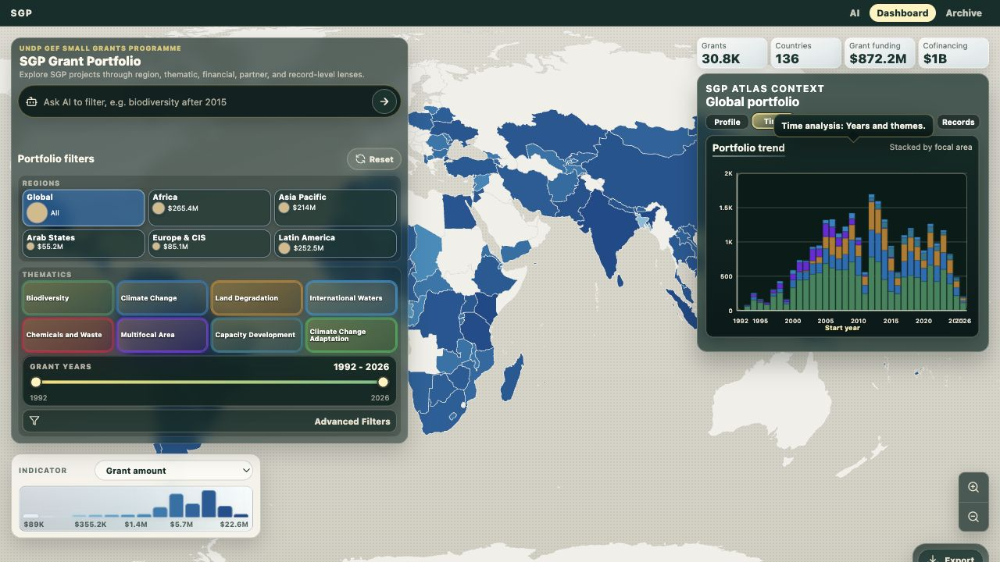
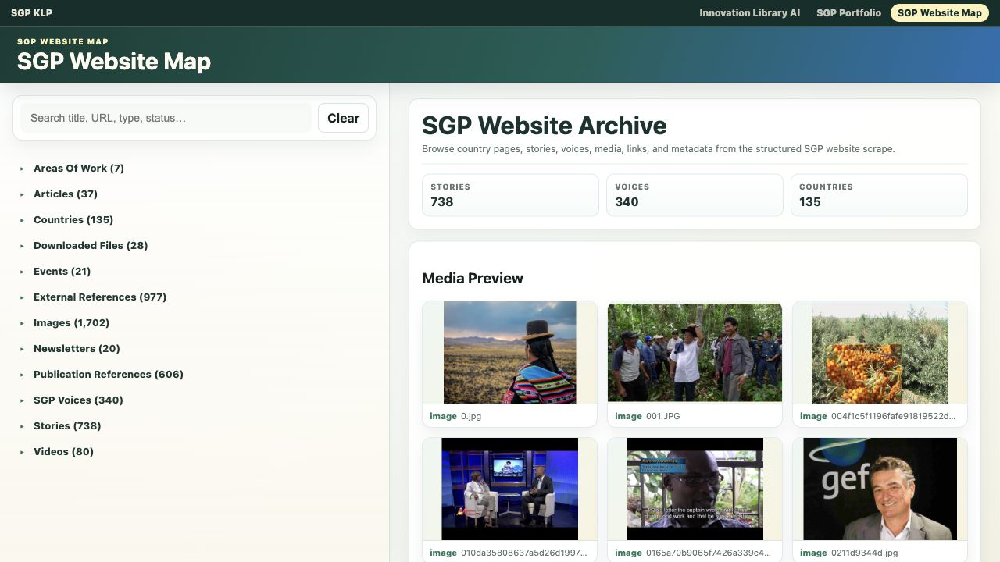

GEF Small Grants Programme Knowledge and Learning Platform
GEF Small Grants Programme Knowledge and Learning Platform
This technical demo explores feature sets, interface patterns, database opportunities, and knowledge workflows for a future GEF Small Grants Programme Knowledge and Learning Platform.
 SGP AI
Ask the knowledge base
SGP AI
Ask the knowledge base
Query SGP publications, project records, and annual monitoring material with cited source cards.

SGP Portfolio Explore the grant portfolioFilter grants by geography, theme, finance, and partner dimensions on the atlas.

SGP Website Content Inspect scraped site contentBrowse country, area, article, media, and document records from the SGP archive.